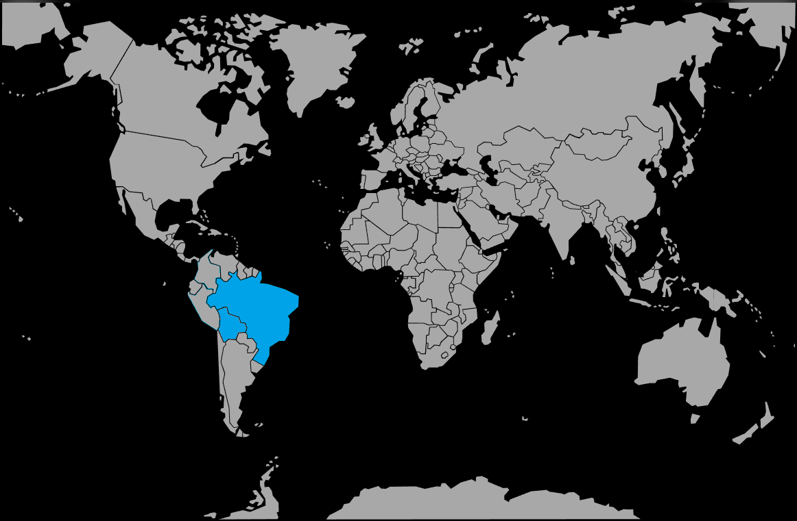

Systématique
- Ordre : Cichliformes
- Famille : Cichlidae
- Sous-famille : Cichlinae
- Genre : Uaru
- Espèce : Uaru amphiacanthoides
Uaru amphiacanthoides est un grand cichlidé sud‑américain au corps disciforme, apprécié pour son comportement social et sa relative placidité malgré sa taille.
En aquarium, les adultes atteignent facilement 25 cm de long, avec un corps haut, comprimé latéralement, et un motif sombre triangulaire caractéristique sur les flancs.
L’espèce vit en groupe lâche ou en couple formé, occupant surtout la zone médiane, où elle évolue lentement entre racines et troncs immergés.
Globalement calme pour un grand cichlidé, elle peut toutefois devenir territoriale en période de reproduction ou dans des volumes trop restreints.
Mode : pondeur sur substrat découvert ; le couple nettoie une surface plane (pierre, racine, zone dégagée du sol) avant d’y déposer les œufs.
Les parents gardent et ventilent œufs et alevins, mais la reproduction reste délicate et demande un groupe de départ et un volume très conséquent pour former un couple stable.
Dimorphisme sexuel : très peu marqué ; la distinction se fait surtout par la papille génitale en période de reproduction et quelques différences de gabarit à l’âge adulte.
Espérance de vie : en moyenne 8 à 10 ans en aquarium, davantage avec un volume important, une eau de qualité et une alimentation adaptée.
Dans la nature, Uaru amphiacanthoides fréquente les zones calmes du bassin de l’Amazone et des Guyanes, souvent en forêts inondées, avec un substrat de feuilles mortes, racines et troncs immergés dans une eau douce, chaude et ambrée.
Répartition
Origine naturelle :
- Centre du bassin amazonien (principalement Brésil), avec présence signalée dans certaines rivières des Guyanes.
- Bras morts, zones calmes de grands fleuves et forêts inondées, souvent à proximité de racines, branches et troncs immergés.
L’espèce évolue dans des eaux chaudes, acides et très douces, souvent colorées par les tanins des matières organiques en décomposition, avec une végétation et un enchevêtrement de bois offrant de nombreux abris.
Paramètres de maintenance
Température : 26 à 30 °C.
pH : 5,0 à 7,0.
GH : 1 à 8 °dGH, eau très douce à douce.
Courant : faible, avec une filtration puissante mais un brassage limité pour ne pas gêner ces grands poissons calmes.
Volume conseillé : à partir de 450–500 L pour un groupe de jeunes, nettement plus pour plusieurs adultes ou un groupe d’adultes établi.
Régime alimentaire
Régime : omnivore à forte tendance herbivore et frugivore ; consomme volontiers légumes (courgette, épinard, petits pois), aliments à base de spiruline, fruits et plantes tendres, complétés par une part raisonnable de nourriture protéinée.
Un apport végétal important limite la prédation sur les plantes du décor ; il est conseillé d’utiliser des plantes robustes et de nombreuses racines pour composer le décor.